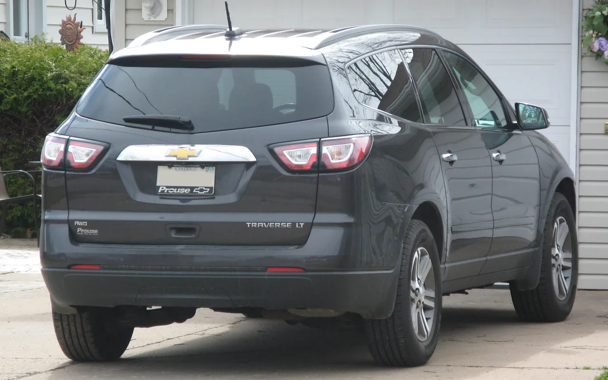

▲ 쉐보레 트래버스. 전장 5.2m, 3.6L V6 314마력의 7인승 대형 SUV다 ⓒ RL GNZLZ, Wikimedia Commons (CC BY-SA 2.0)
국내 자동차 매체 오토트리뷴에 따르면 쉐보레 트래버스의 중고 매물이 신차 가격의 절반 수준에 거래되고 있다. 주행거리 2만~4만km, 비교적 상태가 양호한 매물조차 2,000만 원대에서 팔리고 있어 "2만km 탔는데 2,000만 원대라니"라는 반응이 나올 정도다. 신차 가격이 5,470만 원인 점을 감안하면 이례적으로 가파른 감가폭이다.
1. 왜 이렇게 쌀까 — 연비와 자동차세가 발목을 잡았다
트래버스의 감가폭이 유독 큰 이유는 단순 인기 하락이 아니라 유지비 구조에 있다. 3.6L 자연흡기 V6 엔진은 8.3km/L의 연비를 내는데, 이는 동급 국산 대형 SUV 대비 눈에 띄게 낮은 수치다. 배기량 기준으로 매겨지는 자동차세도 연간 90만 원을 넘어, 매년 고정적으로 나가는 비용이 만만치 않다. 결국 초기 구매가는 매력적이어도 장기 보유 비용까지 감안하면 신차 대비 감가가 그만큼 반영된 셈이다.
2. 그래도 살 만한 사람은 따로 있다

▲ 트래버스 후면. 3열까지 여유로운 실내공간이 대형 SUV로서의 실용성을 뒷받침한다 ⓒ SsmIntrigue, Wikimedia Commons (CC BY-SA 4.0)
연간 주행거리가 짧은 운전자라면 이야기가 달라진다. 연료비 절감보다 애초에 낮아진 구매가에서 얻는 이득이 훨씬 크기 때문이다. 여기에 전국 380개소에 이르는 쉐보레 정비망 덕분에 부품 수급이나 정비 접근성도 국내에서 크게 불편하지 않은 편이다. 3열까지 여유로운 실내공간과 AWD 옵션을 고려하면, 다인 가족이 저렴하게 대형 SUV를 노리는 경우 합리적인 선택지가 될 수 있다.
다만 국내에서 대형 SUV를 감가상각까지 고려해 접근한다면, 트래버스만큼이나 국산 대형 SUV의 중고 시세와도 함께 비교해볼 필요가 있다. 같은 예산이라면 팰리세이드나 모하비 중고 매물도 후보에 오를 수 있는데, 이 경우 자동차세와 연비는 트래버스보다 유리하지만 3열 공간과 편의사양 구성은 차이가 날 수 있다. 결국 선택 기준은 '얼마나 큰 차를 저렴하게 타고 싶은가'와 '연간 유지비를 어디까지 감당할 수 있는가' 사이의 균형점을 찾는 문제로 귀결된다.